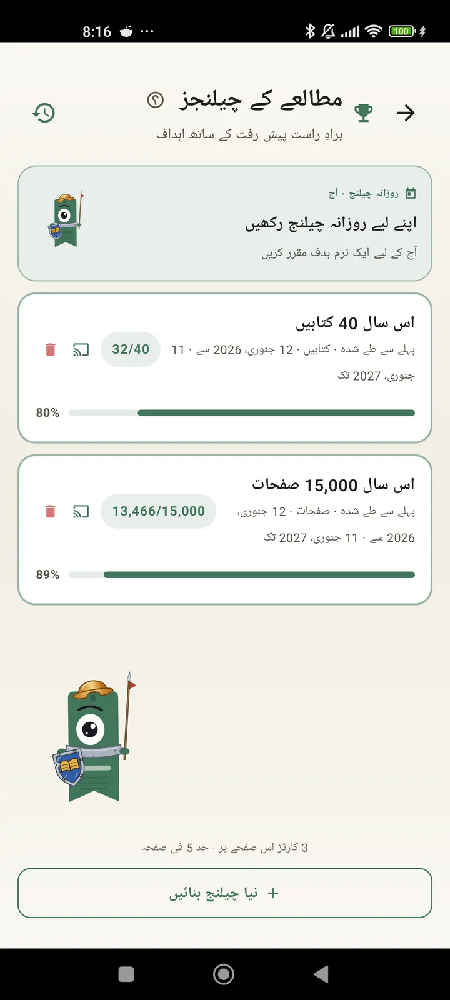

ایک قاری کے طور پر خود کو جانیں
چیلنجز، بنگو، ویجٹس اور مزید خصوصیات تاکہ آپ اپنے مطالعے سے پورا فائدہ اٹھائیں۔ 3.7 میں نیا: چیلنجز اور بنگو ویجٹس۔

مطالعے کے چیلنجز
صفحات، مسلسل سلسلوں یا اصناف کے لحاظ سے ہدف مقرر کریں۔ مفت میں 15 تک فعال چیلنجز، Pro کے ساتھ لامحدود۔ ساتھ میں ایک حسبِ ضرورت روزانہ چیلنج جو حد میں شمار نہیں ہوتا۔

روزانہ چیلنج
ہر روز ایک نیا ہدف۔ اپنا مسلسل سلسلہ برقرار رکھنے کے لیے آدھی رات سے پہلے چیلنج مکمل کریں۔

مطالعے کا بنگو
ہر مہینے دو نئے بنگو، موضوعاتی خانوں کے ساتھ۔ قطاریں، کالم یا پورا کارڈ مکمل کریں۔

ہفتہ وار خلاصہ
ہر پیر کو آپ کے ہفتے کی جھلک: پڑھے گئے صفحات، کل وقت، مسلسل سلسلہ اور پچھلے ہفتے سے موازنہ۔

ماہانہ خلاصہ
جب مہینہ ختم ہوتا ہے تو Lecturameter اس کا حساب سمیٹ دیتی ہے: صفحات، وقت، مکمل کی گئی کتابیں، دن بہ دن آپ کی رفتار اور مہینے کی آپ کی کتاب۔

بنگو ویجٹ Pro
اس مہینے کا بنگو کارڈ ہمیشہ نظر کے سامنے، مکمل کیے گئے خانوں اور بنائی گئی لائنوں کے ساتھ۔

کتاب ویجٹ مفت
جو کتاب آپ پڑھ رہے ہیں اسے سیدھا اپنی ہوم اسکرین پر دیکھیں: سرورق، عنوان، مصنف، صفحات اور پیش رفت کا فیصد، ہمیشہ تازہ ترین۔ جہاں چاہیں وہاں فٹ ہونے کے لیے سائز بدلا جا سکتا ہے۔
سچ کہوں بھائی، یہ ایپ تھراپی جیسی لگتی ہے، میں روزانہ دو چار صفحات پڑھنے سے اب تقریباً 20 صفحات روزانہ پر آ گیا ہوں اور بہتری جاری ہےصارف کی رائے، ای میل کے ذریعے بھیجی گئی

ماہانہ موازنہ Pro
ایپ کھولے بغیر اپنے حالیہ مہینوں پر ایک سرسری نظر۔ ہر مہینے کے صفحات کے بار، موجودہ مہینہ نمایاں، تاکہ آپ ایک نظر میں جان لیں کہ اس مہینے آپ پچھلے مہینے سے بہتر ہیں یا کمتر۔

چیلنجز ویجٹ Pro
آپ کے فعال چیلنجز اور ان کی پیش رفت ہوم اسکرین پر۔ چیلنجز اسکرین سے منتخب کریں کہ کون سے دکھانے ہیں۔